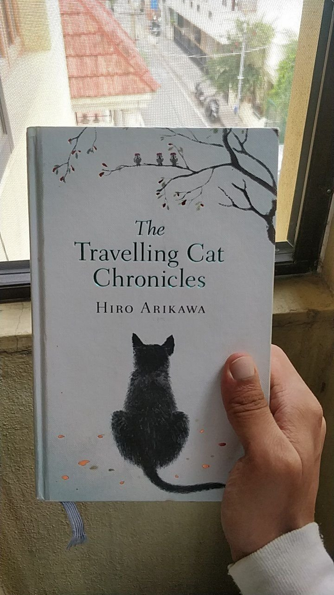
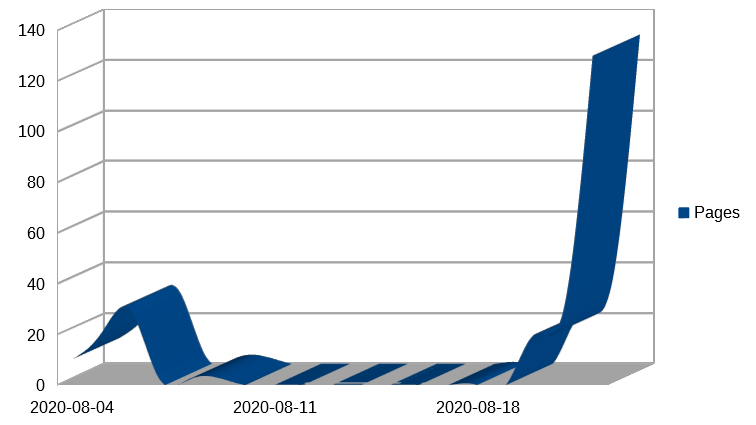

The Travelling Cat Chronicles
Estimated time to read: 2 minutes

Author : Hiro Arikawa
*No spoilers*
So I started this book in the first week of August and I didn't make much progress for most of the month. But day before yesterday, I hit the 40% mark and that's where I was hooked.
Nana is a stray cat who's fiercely independent and doesn't care for humans; He even only begrudgingly and helplessly accepts the care of the human who nurses him back to health when he's hit by a car. Once he's healed, he stays with him out of sheer "eyeroll-y" gratitude but then eventually warms up to him. The cat's travelling chronicles begin when Satoru, after 5 years of living with Nana, has come to the decision of finding him a new home for reasons that are divulged way later in the book. And at every stop that they make, Nana finds a way to create problems just enough that Satoru has to accept failure in making that place Nana's next residence and the journey goes on.
Hiro Arikawa does not shy away from wilfully taking time to describe the sights along the journey, the flowers, the Pampas, Mount Fuji and other beautiful scenes that they pass through. He also fleshes out the few but memorable characters that Satoru interacts with , so much so that you cannot forget them and the relationships they share with Satoru as friends or as a family member or even a former pet. I'm blown away by the consistency with which he's put himself in the paws of a cat throughout with zero slips and as a reader, so are you.
And then there is the moment where there is the equivalent of a series of plates crashing where you don't see it coming or rather, I didn't see it coming and before I knew it, I was sobbing like a little baby. And even though I've said what I said and you've read what you've read, you will forget my words and you won't know when to expect the tug at the heartstrings. It will happen when it does and I hope you can find your way back to this post to tell me it did.
And you are right, Nana :') Humans can never claim to be as smart as a cat :)

My pace of reading the book over time
Subjective Rating: : 5/5